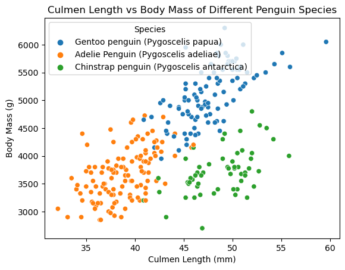
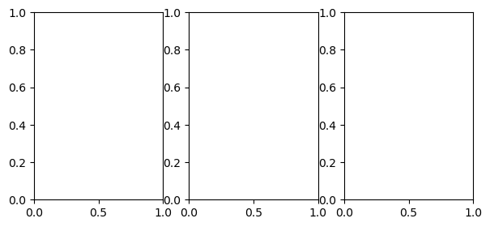

import numpy as np
import pandas as pd
import seaborn as sns
from matplotlib import pyplot as plt
from matplotlib.patches import Patch
from sklearn.preprocessing import LabelEncoder
from itertools import combinations
from sklearn.linear_model import LogisticRegression
from sklearn.tree import DecisionTreeClassifier
from sklearn.ensemble import RandomForestClassifier
train_url = "https://raw.githubusercontent.com/middlebury-csci-0451/CSCI-0451/main/data/palmer-penguins/train.csv"
train = pd.read_csv(train_url)
# set seed for reproducibility
np.random.seed(0)https://zaynmak.github.io/posts/Penguins/Penguins.html
species_group = train[["Culmen Length (mm)", "Culmen Depth (mm)", "Flipper Length (mm)", "Body Mass (g)", "Species"]].groupby('Species').aggregate('mean')
# display figure
sns.scatterplot(data=train, x="Culmen Length (mm)", y="Body Mass (g)", hue="Species").set(title="Culmen Length vs Body Mass of Different Penguin Species")
# display table
species_group| Culmen Length (mm) | Culmen Depth (mm) | Flipper Length (mm) | Body Mass (g) | |
|---|---|---|---|---|
| Species | ||||
| Adelie Penguin (Pygoscelis adeliae) | 38.710256 | 18.365812 | 189.965812 | 3667.094017 |
| Chinstrap penguin (Pygoscelis antarctica) | 48.719643 | 18.442857 | 195.464286 | 3717.857143 |
| Gentoo penguin (Pygoscelis papua) | 47.757000 | 15.035000 | 217.650000 | 5119.500000 |

First I only selected a few columns with quantitative data, then grouped the observations by species and saw the mean of the values. Looking at the table and figure we see that Gentoo penguins tend to have a higher body mass, flipper length, and smaller culmen depth compared to the other two species. Meanwhile Adelie penguins tend to have a smaller culmen length and flipper length compared to the other two species. Chinstrap penguins tend to have a similar body mass and culmen depth to Adelie penguins, and similar culmen length to Gentoo penguins. The figure agrees with our observations of the table. We see that Gentoo penguins tend to have a higher body mass, while Adelie penguins tend to have a smaller culmen length. The figure also shows that Chinstrap penguins tend to have a similar body mass to Adelie penguins, and similar culmen length to Gentoo penguins.
le = LabelEncoder()
le.fit(train["Species"])
def prepare_data(df):
df = df.drop(["studyName", "Sample Number", "Individual ID", "Date Egg", "Comments", "Region"], axis = 1)
df = df[df["Sex"] != "."]
df = df.dropna()
y = le.transform(df["Species"])
df = df.drop(["Species"], axis = 1)
df = pd.get_dummies(df)
return df, y
X_train, y_train = prepare_data(train)# I picked the quantitative and qualitative predictors that I thought would be most useful for predicting the species of a penguin.
all_qual_cols = ["Clutch Completion", "Island"]
all_quant_cols = ['Culmen Length (mm)', 'Culmen Depth (mm)', 'Flipper Length (mm)', "Body Mass (g)"]
best_cols = 0
best_score = 0
for qual in all_qual_cols:
qual_cols = [col for col in X_train.columns if qual in col ]
for pair in combinations(all_quant_cols, 2):
cols = qual_cols + list(pair)
LR = LogisticRegression(max_iter=3000)
LR.fit(X_train[cols], y_train)
score = LR.score(X_train[cols], y_train)
if score > best_score:
best_score = score
best_cols = cols
print(best_cols, best_score)['Island_Biscoe', 'Island_Dream', 'Island_Torgersen', 'Culmen Length (mm)', 'Culmen Depth (mm)'] 0.99609375The predictors that result in the highest accuracy in a logistic regression are Island, Culmen Length, and Culmen Depth. Next we want to see our model’s accuracy on the test set.
test_url = "https://raw.githubusercontent.com/middlebury-csci-0451/CSCI-0451/main/data/palmer-penguins/test.csv"
test = pd.read_csv(test_url)
X_test, y_test = prepare_data(test)LR = LogisticRegression(max_iter=1000)
LR.fit(X_train[best_cols], y_train)
LR.score(X_test[best_cols], y_test)1.0We found a 100% accuracy on the test set. This is a very high accuracy, and we can be confident that our model is a good predictor of penguin species. Out of Curiosity, I wanted to see if other predictors would be better on different models. I first ran a random forest classifier, decision tree classifier.
best_cols = 0
best_score = 0
for qual in all_qual_cols:
qual_cols = [col for col in X_train.columns if qual in col ]
for pair in combinations(all_quant_cols, 2):
cols = qual_cols + list(pair)
RF = RandomForestClassifier(max_depth=5)
RF.fit(X_train[cols], y_train)
score = RF.score(X_train[cols], y_train)
if score > best_score:
best_score = score
best_cols = cols
print(best_cols, best_score)
RF = RandomForestClassifier(max_depth=5)
RF.fit(X_train[best_cols], y_train)
RF.score(X_test[best_cols], y_test)['Island_Biscoe', 'Island_Dream', 'Island_Torgersen', 'Culmen Length (mm)', 'Culmen Depth (mm)'] 1.00.9852941176470589For the random forest classifier, we find the same predictors are used, however the testing accuracy is not 100%.
best_cols = 0
best_score = 0
for qual in all_qual_cols:
qual_cols = [col for col in X_train.columns if qual in col ]
for pair in combinations(all_quant_cols, 2):
cols = qual_cols + list(pair)
DR = DecisionTreeClassifier(max_depth=5)
DR.fit(X_train[cols], y_train)
score = DR.score(X_train[cols], y_train)
if score > best_score:
best_score = score
best_cols = cols
print(best_cols, best_score)
DR = DecisionTreeClassifier(max_depth=5)
DR.fit(X_train[best_cols], y_train)
DR.score(X_test[best_cols], y_test)['Island_Biscoe', 'Island_Dream', 'Island_Torgersen', 'Culmen Length (mm)', 'Culmen Depth (mm)'] 1.00.9852941176470589Similarly for the decision tree classifier, we find the same predictors are used, however the testing accuracy is not 100%.
def plot_regions(model, X, y):
qual_features = X.columns[:3]
x0 = X[X.columns[3]]
x1 = X[X.columns[4]]
fig, axarr = plt.subplots(1, len(qual_features), figsize = (7, 3))
# create a grid
grid_x = np.linspace(x0.min(),x0.max(),501)
grid_y = np.linspace(x1.min(),x1.max(),501)
xx, yy = np.meshgrid(grid_x, grid_y)
XX = xx.ravel()
YY = yy.ravel()
for i in range(len(qual_features)):
XY = pd.DataFrame({
X.columns[3] : XX,
X.columns[4] : YY
})
for j in qual_features:
XY[j] = 0
XY[qual_features[i]] = 1
p = model.predict(XY)
p = p.reshape(xx.shape)
# use contour plot to visualize the predictions
axarr[i].contourf(xx, yy, p, cmap = "jet", alpha = 0.2, vmin = 0, vmax = 2)
ix = X[qual_features[i]] == 1
# plot the data
axarr[i].scatter(x0[ix], x1[ix], c = y[ix], cmap = "jet", vmin = 0, vmax = 2)
axarr[i].set(xlabel = X.columns[3],
ylabel = X.columns[4])
patches = []
for color, spec in zip(["red", "green", "blue"], ["Adelie", "Chinstrap", "Gentoo"]):
patches.append(Patch(color = color, label = spec))
plt.legend(title = "Species", handles = patches, loc = "best")
plt.tight_layout()plot_regions(LR, X_train[best_cols], y_train)ValueError: The feature names should match those that were passed during fit.
Feature names must be in the same order as they were in fit.
X_train[best_cols].columns[3]'Culmen Length (mm)'